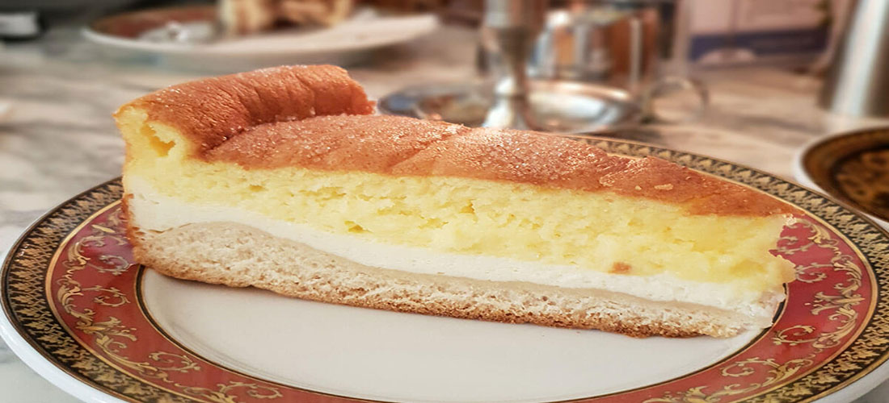
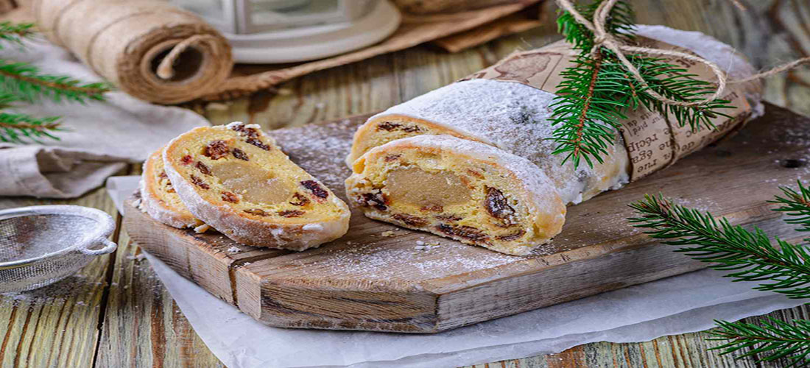
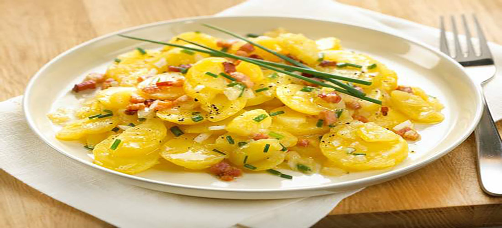
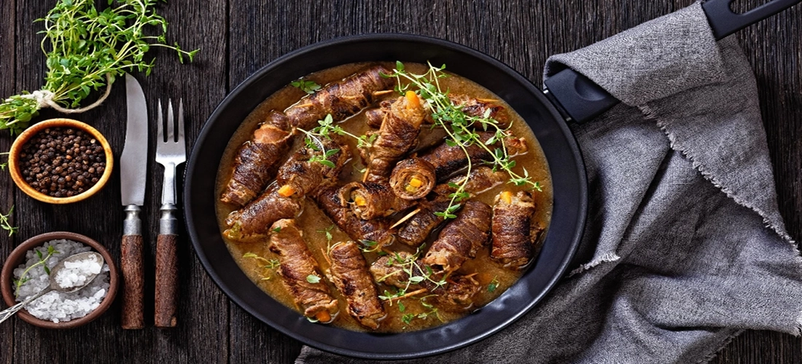

Eierschecke

Eierschecke, Dresden şehrinin yöresel yemeklerinden biridir ve bir çeşit turta olarak düşünülebilir. Eierschecke, yumurta, süt, un ve çeşitli sebzeler kullanılarak yapılır. Özellikle ıspanak, havuç, soğan ve patates gibi sebzeler kullanılır.
Eierschecke, hamur işi olarak yapılır ve fırında pişirilir. Hamur, yumurta, süt, un ve tuz gibi malzemeler kullanılarak hazırlanır ve daha sonra fırınlanır. Üzerine ise sebzeler konularak pişirilir. Eierschecke, turta gibi servis edilebilir ve genellikle ısıtılarak tüketilir.
Eierschecke, Dresden şehrinin yöresel yemekleri arasında önemli bir yere sahiptir ve yöre halkı tarafından sıklıkla tüketilir. Bu yemek, sağlıklı ve lezzetli bir yemek olarak kabul edilir ve çeşitli sebzelerin yanı sıra yumurta ve süt gibi protein kaynaklarını da içermektedir.
Rote Grütze

Rote Grütze, Dresden şehrinin yöresel yemeklerinden biridir ve meyveler, şeker ve nişasta kullanılarak yapılır. Özellikle çeşitli meyvelerden oluşan bir kompot olarak tüketilir. Rote Grütze, genellikle çeşitli meyveler, şeker ve nişasta kullanılarak yapılır. Meyveler, tencerede pişirilerek püre haline getirilir ve daha sonra soğumaya bırakılır.
Rote Grütze, Almanya'da çok popüler olan bir tatlıdır ve özellikle yaz aylarında tüketilir. Bu tatlı, soğuk ve serinlenmeyi sağladığı için yaz aylarında tercih edilir. Rote Grütze, genellikle sütlü tatlıların yanı sıra çeşitli hamur işleri ile birlikte tüketilir.
Rote Grütze, Dresden şehrinin yöresel yemekleri arasında önemli bir yere sahiptir ve yöre halkı tarafından sıklıkla tüketilir. Bu yemek, meyve tatlısı olarak kabul edilir ve çeşitli meyvelerin kullanıldığı bir kompot olarak tüketilir. Rote Grütze, sağlıklı ve lezzetli bir tatlı olarak kabul edilir ve çeşitli meyvelerin yanı sıra nişasta gibi enerji kaynaklarını da içermektedir.
Stollen

Stollen, Almanya'da yapılan çeşitli hamur işleri arasında en popüler olanlardan biridir ve özellikle Noel döneminde tüketilir. Stollen, üzüm, kayısı ve muz gibi meyveler, tuz, yumurta, süt ve un gibi malzemeler kullanılarak yapılır. Stollen, hamur işi olarak yapılır ve fırında pişirilir.
Stollen, Almanya'da çok popüler olan bir tatlıdır ve Noel döneminde sıklıkla tüketilir. Bu tatlı, Noel için özel olarak yapılır ve genellikle aileler arasında paylaşılır. Stollen, Almanya'da yapılan çeşitli hamur işleri arasında en popüler olanlardan biridir ve özellikle Noel döneminde tüketilir.
Stollen, Dresden şehrinin yöresel yemekleri arasında önemli bir yere sahiptir ve yöre halkı tarafından sıklıkla tüketilir. Bu yemek, hamur işi olarak yapılır ve çeşitli meyveler, tuz, yumurta, süt ve un gibi malzemeler kullanılarak yapılır. Stollen, Noel döneminde özel olarak yapılır ve aileler arasında paylaşılır.
Kartoffelsalat

Kartoffelsalat, Dresden şehrinin yöresel yemeklerinden biridir ve patateslerin mayonez ve çeşitli sebzelerle karıştırılarak yapılmış bir salat olarak düşünülebilir. Özellikle havuç, soğan, maydanoz ve biber gibi sebzeler kullanılır.
Kartoffelsalat, patateslerin haşlanarak püre haline getirilmesiyle yapılır. Daha sonra patates püresine diğer sebzeler eklenir ve mayonez ile karıştırılır. Kartoffelsalat, soğuk ve serinlenmeyi sağladığı için yaz aylarında sıklıkla tüketilir. Genellikle et yemeklerinin yanı sıra kendi başına da tüketilebilir.
Kartoffelsalat, Dresden şehrinin yöresel yemekleri arasında önemli bir yere sahiptir ve yöre halkı tarafından sıklıkla tüketilir. Bu yemek, patateslerin mayonez ve çeşitli sebzelerle karıştırılarak yapılmış bir salat olarak kabul edilir ve yaz aylarında sıklıkla tüketilir. Kartoffelsalat, sağlıklı ve lezzetli bir yemek olarak kabul edilir ve patateslerin yanı sıra çeşitli sebzeler de içermektedir.
Rinderrouladen

Rinderrouladen, Dresden şehrinin yöresel yemeklerinden biridir ve biftek eti, tereyağı, soğan, mayonez ve senf gibi malzemeler kullanılarak yapılmış bir et yemektir. Rinderrouladen, genellikle biftek eti kullanılarak yapılır ve et, tereyağında kızartılır. Daha sonra etin üzerine tereyağı, soğan, mayonez ve senf gibi malzemeler konularak pişirilir.
Rinderrouladen, Almanya'da çok popüler olan bir et yemektir ve genellikle aileler arasında tüketilir. Bu yemek, etin yanı sıra tereyağı, soğan, mayonez ve senf gibi malzemelerin de kullanıldığı bir yemektir ve lezzeti oldukça farklıdır.
Rinderrouladen, Dresden şehrinin yöresel yemekleri arasında önemli bir yere sahiptir ve yöre halkı tarafından sıklıkla tüketilir. Bu yemek, biftek eti, tereyağı, soğan, mayonez ve senf gibi malzemeler kullanılarak yapılmış bir et yemektir ve aileler arasında sıklıkla tüketilir. Rinderrouladen, sağlıklı ve lezzetli bir yemek olarak kabul edilir ve et, tereyağı ve çeşitli sebzeler gibi protein ve vitamin kaynaklarını da içermektedir.
Saxonische Kaltschale

Saxonische Kaltschale, Dresden şehrinin yöresel yemeklerinden biridir ve çeşitli sebzeler, yoğurt ve mayonez gibi malzemeler kullanılarak yapılmış bir salata benzeyen yemektir. Özellikle havuç, soğan, domates, biber ve marul gibi sebzeler kullanılır.
Saxonische Kaltschale, sebzelerin haşlanarak püre haline getirilmesiyle yapılır. Daha sonra sebze püresine yoğurt ve mayonez eklenir ve karıştırılır. Saxonische Kaltschale, soğuk ve serinlenmeyi sağladığı için yaz aylarında sıklıkla tüketilir. Genellikle et yemeklerinin yanı sıra kendi başına da tüketilebilir.
Saxonische Kaltschale, Dresden şehrinin yöresel yemekleri arasında önemli bir yere sahiptir ve yöre halkı tarafından sıklıkla tüketilir. Bu yemek, çeşitli sebzeler, yoğurt ve mayonez gibi malzemeler kullanılarak yapılmış bir salata benzeyen yemektir ve
Leipziger Allerlei

Leipziger Allerlei, Dresden şehrinin yöresel yemeklerinden biridir ve çeşitli sebzelerin haşlanarak servis edildiği bir yemektir. Özellikle havuç, bamya, fasulye, bezelye ve kuşkonmaz gibi sebzeler kullanılır.
Leipziger Allerlei, sebzelerin haşlanarak servis edildiği bir yemektir ve genellikle et yemeklerinin yanı sıra kendi başına da tüketilebilir. Bu yemek, yöre halkı tarafından sıklıkla tüketilen bir yemektir ve Dresden şehrinin yöresel yemekleri arasında önemli bir yere sahiptir.
Leipziger Allerlei, sağlıklı ve lezzetli bir yemek olarak kabul edilir ve çeşitli sebzelerin yanı sıra protein ve vitamin kaynaklarını da içermektedir. Bu yemek, çeşitli sebzelerin haşlanarak servis edildiği bir yemek olarak kabul edilir ve genellikle et yemeklerinin yanı sıra kendi başına da tüketilebilir.